2026
Wally
A financial literacy app for college students, built around a campus finance club called Student Wallet. It was my first UX project.
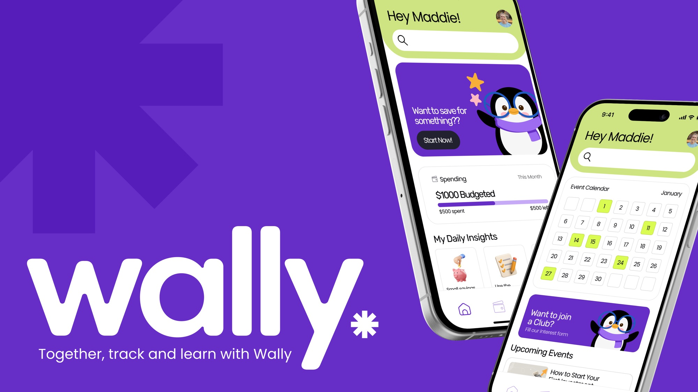
- Role
- UI lead
- Class
- UXDG 101, Prof. BC Hwang
- Team
- Aarya Mahapatra, Cherry Phan, Anna Vorontsova, Ashley Cho
- Recognition
- Winner, European Product Design Award 2026. Finalist, The Rookie Awards 2026.
Problem
Students handling money for the first time
The brief was to design an app for a college club. We each pitched a club, voted, and landed on a financial literacy club, mostly because money was something all five of us were quietly stressed about.
Most finance apps are built for people with salaries and credit histories. A first-year student with a meal plan and a part-time paycheck opens one and sees words they have never had to use. We wanted to know what would make budgeting feel doable for someone who has never done it.
Research
What students told us
We collected 66 survey responses, ran 18 interviews, and shadowed three students through a full day of spending. One teammate also sat in on a SCAD financial workshop to see what help already existed.
Half of the students we surveyed had never taken a finance class or workshop. 84% said they understood saving, but only 34% said the same about loans and debt, and 17% about investing. All three students we shadowed bought things on impulse and had no system for keeping track.
College students care deeply about managing their money, but they lack confidence because existing financial systems are overwhelming and emotionally stressful.
We sorted 355 data points into 18 themes, then 13 insights, and ended with four areas to design for: financial goals, budgeting and tracking, community learning, and motivation.
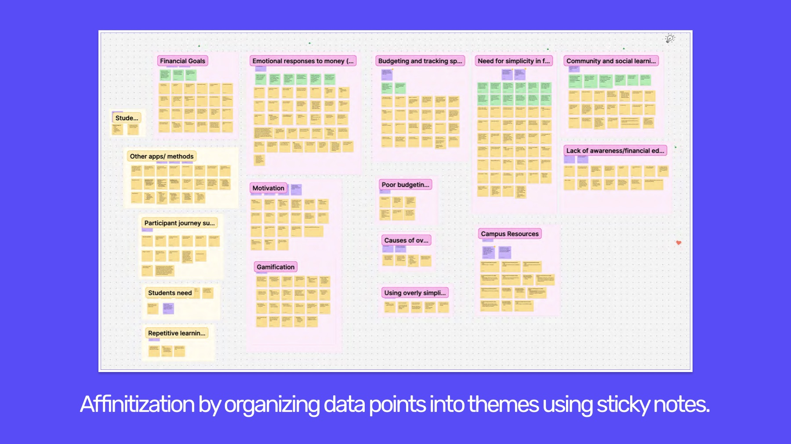
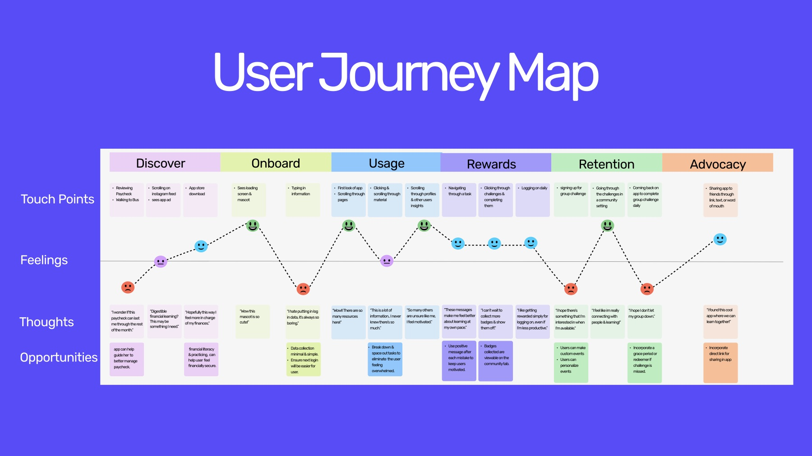
Process
From sticky notes to screens
Each of the four areas became a "How might we" question:
- Financial goals. How might we make budgeting personal and achievable?
- Budgeting and tracking. How might we build budgeting habits through simple tools?
- Motivation. How might we use incentives to motivate users?
- Community learning. How might we build a community-driven finance club?
We sketched answers in Crazy 8s rounds. Card sorting gave us the four tabs the app still has: dashboard, tracking, learning, and community.
Color and type
As UI lead I was responsible for how Wally looked and felt: the color, type, components, and the high-fidelity screens.
From the first conversation we knew we wanted green and purple. Green because most of us think of money as green. Purple because it feels more approachable than the corporate blue most finance apps use. We built the mood board around those two.
The base colors are an almost-indigo purple and a yellowish green that stands for growth and money. Pink makes it warm and friendly, and a dark neutral keeps the text readable.
Rubik is the main typeface. Its corners are soft and rounded, which makes it a little playful, so we paired it with Poppins to balance it out.
Wally the penguin
We also made a mascot. Wally is a penguin who shows up throughout the app, and he has a range of emotions so we could put him in different situations.
The tone we wrote down was supportive, encouraging, playful, and beginner-friendly.
Components
Consistency was key. The corners are rounded the same way everywhere, and the font sizes and styles stay the same from screen to screen. The library covers the navigation bar, pop-ups, progress bars, an icon set for navigation and categories, and a mascot that moves.
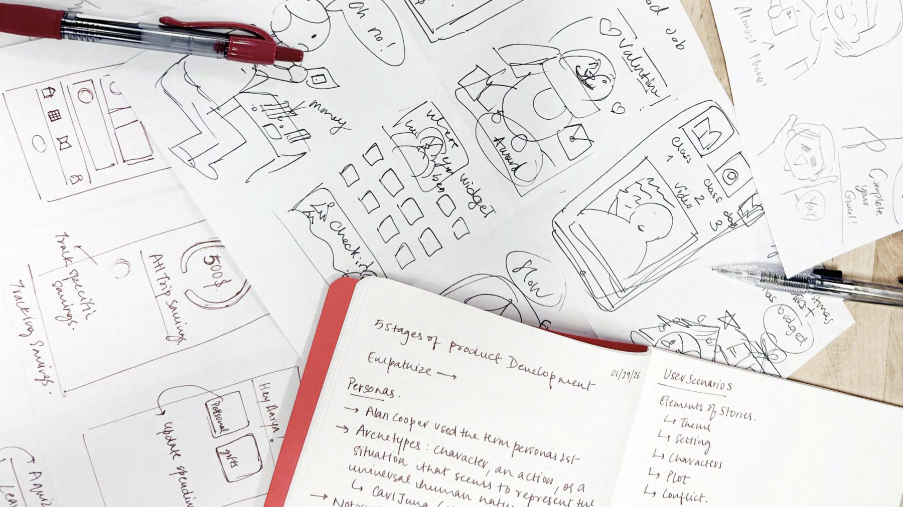
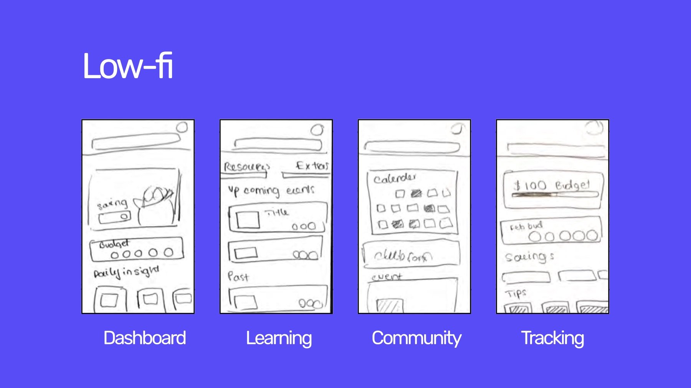
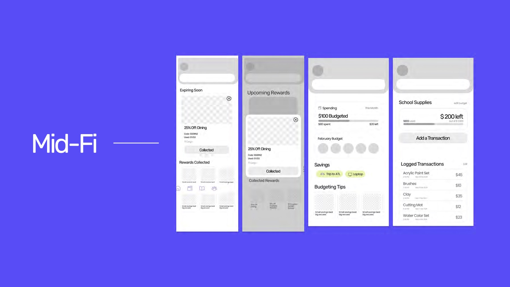
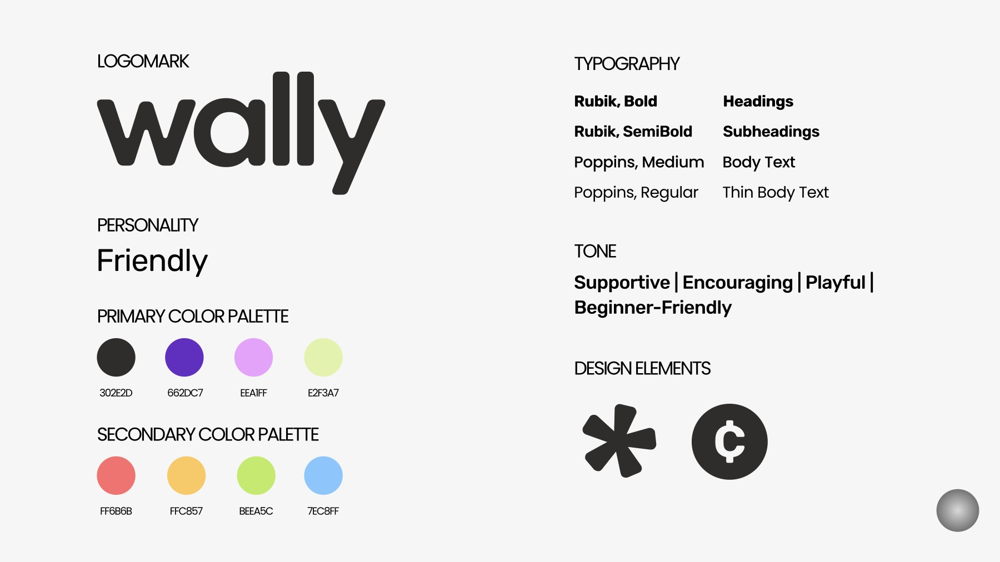
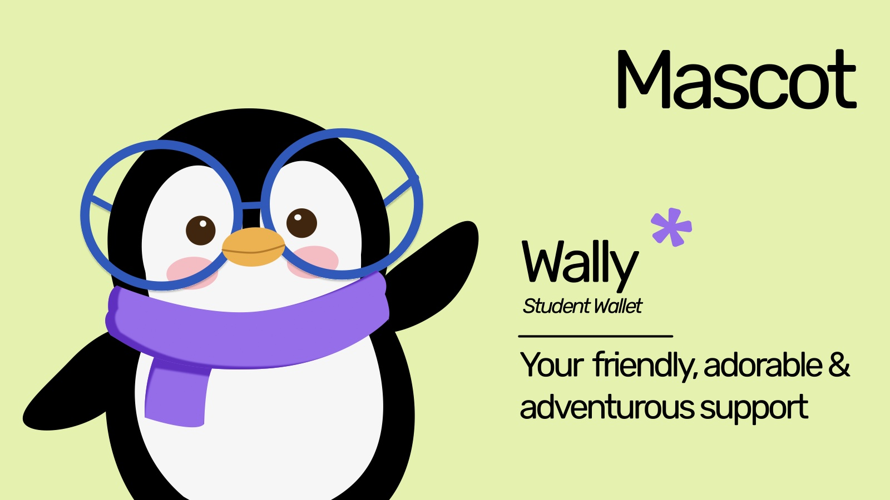
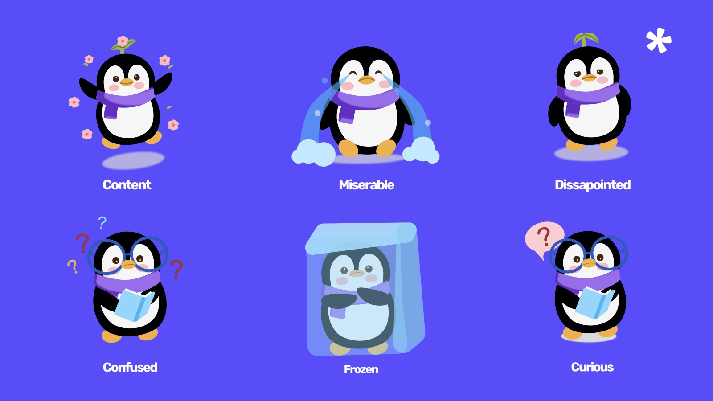
Solution
Four tabs, one penguin, Wally
- Dashboard. Your budget for the month at a glance, a daily tip, and any rewards about to expire.
- Tracking. Split your money into categories, log what you spend, and save toward something specific, like a laptop.
- Learning. Beginner readings, past workshop recordings, and club resources you can come back to.
- Community. The club calendar, event sign-up, and a form to join.
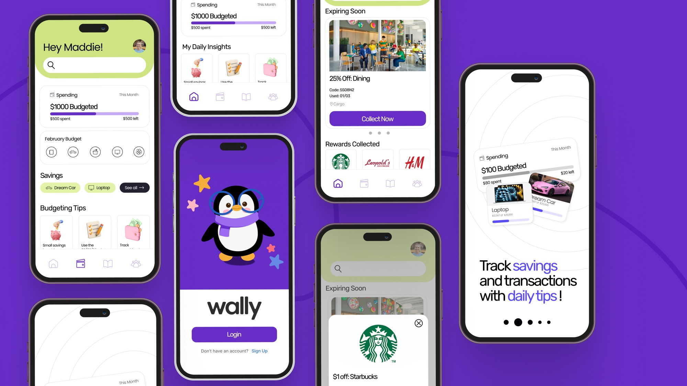
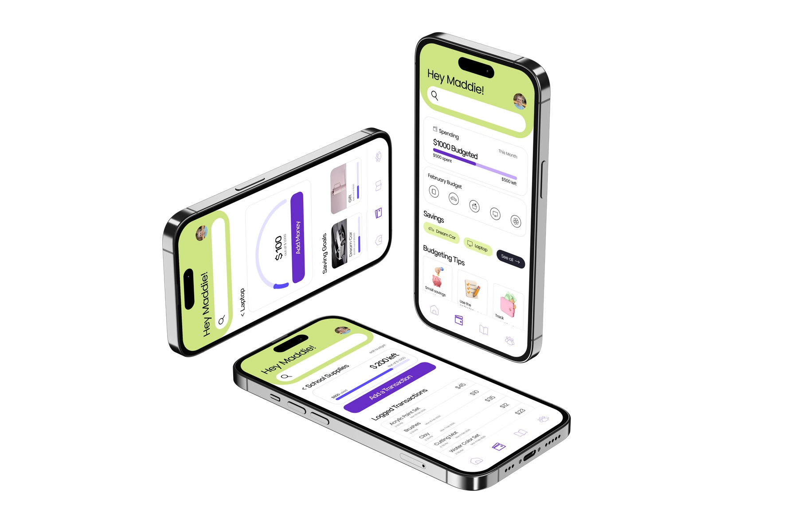
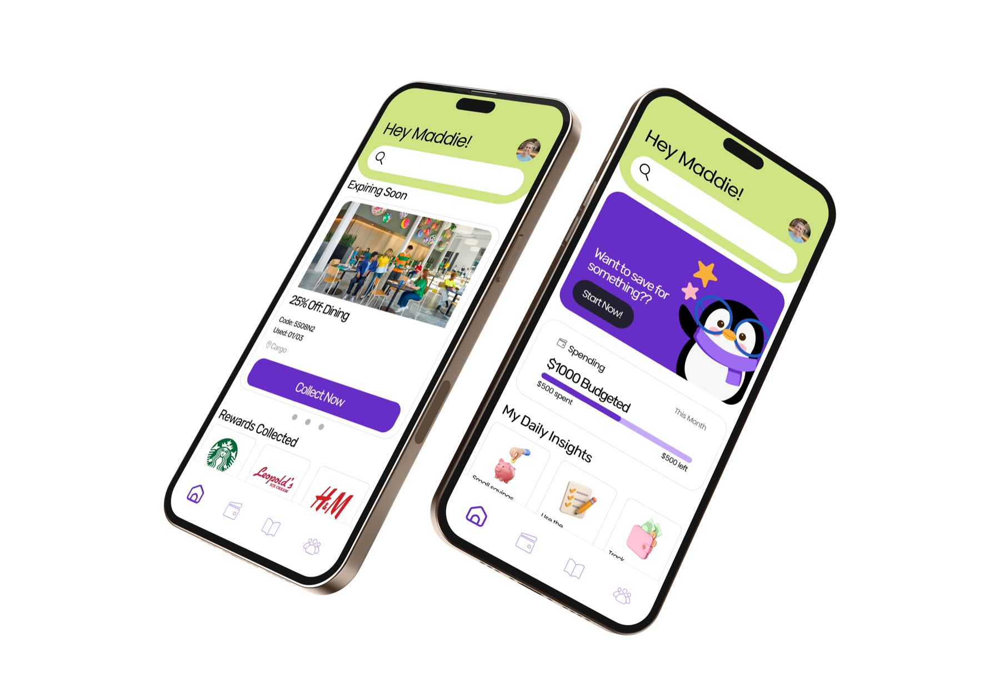
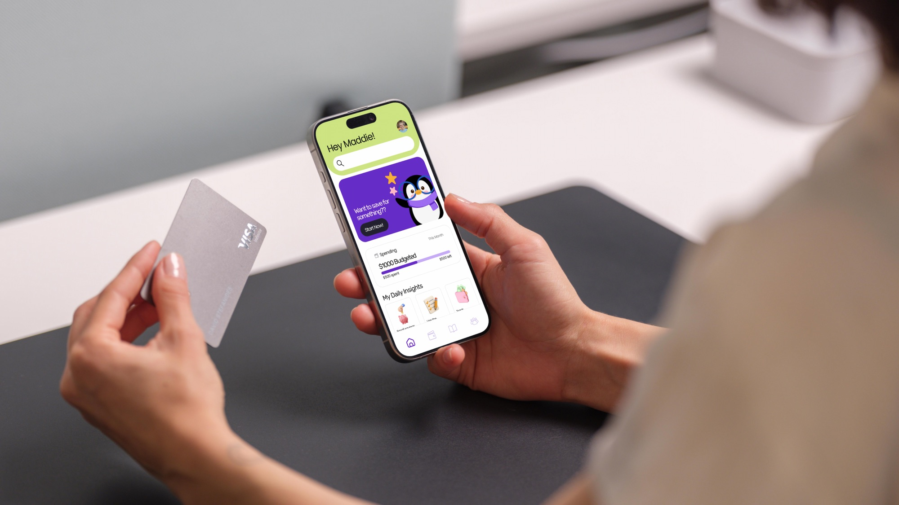
Outcome
What changed, and what I took from it
We tested with 26 people across two rounds and had an expert review the prototype.
Wally went on to win the European Product Design Award 2026 in Product User Interface Design (student) and was a finalist in The Rookie Awards 2026.
What I learned
Wally was my door into UX. I came from graphic design, so I walked in thinking the job was making screens look good. That was the part I already knew how to do.
What surprised me was how much of the work happens before anyone opens Figma: the interviews, the sticky notes, the long conversations about what the problem really is. By the time I started on the UI, a lot of my decisions had already been made by what students told us. Now when I add a color or a button, I want to be able to point to the person it is for.
I also found out I like working this way more than working alone. Five of us with five different jobs got further than any one of us would have.
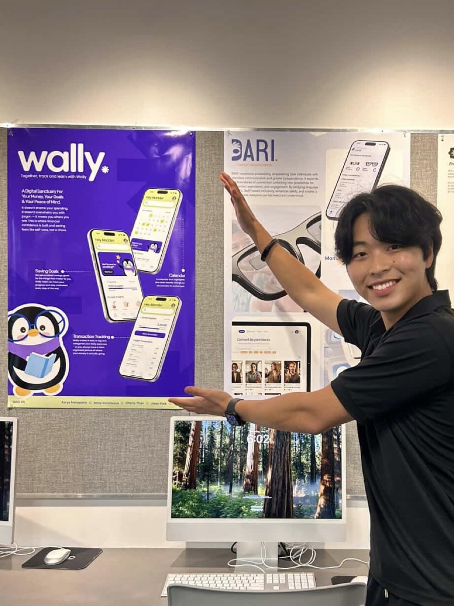
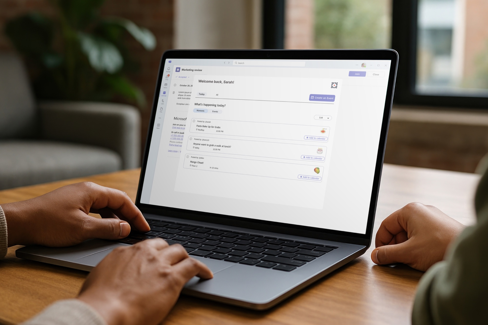